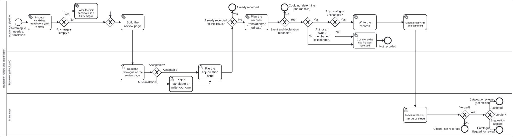

Generated from
cat-harness/library/processes/translation-review-adjudication.bpmnbygen-processes-viz.ts— do not edit here. All processes · cat-harness processes
Translation review and adjudication
Process_TranslationReviewAdjudication · advisory · 11 step(s)
A person’s verdict on a machine translation, carried from the review page to the record. Candidate translations come from any engine; a reviewer accepts what is there, or flags a mistranslation and picks a candidate or writes their own; the verdict travels as a GitHub issue; a workflow checks it and opens a pull request; a maintainer merges it.
You are in this process when a catalogue has a translation nobody has adjudicated: a machine, flagged or stale cell on the review page. translation-workflow produces the machine translation and human-translation-workflow makes a locale official; this process sits between them and does neither. What it records is that ONE catalogue was read by ONE person who could be held to it, against the exact bytes they saw.
Two rules hold throughout. Candidates are never a barrier to having a translation: an empty msgstr gets the first candidate, marked fuzzy, so the page always has something to show. And a suggestion is a person’s text that nobody else has reviewed: it enters the catalogue fuzzy, flagging it for review, never accepting it. Locale sign-off (X-Folio-Official, the locale’s status.json) is a separate, deliberate act that this process never performs.
GitHub is one Tool here, not the process: the issue is the carrier of the verdict and the pull request the carrier of the record. Another forge carrying the same translation-adjudication/v1 record would be another Tool satisfying the same skill.

How it connects
- Called by: no call activity names this process
- Calls: none
- Presented on: no docs page section shows this diagram
- Running instances: none recorded
Lanes — who acts
Steps
Every one of the 11 step(s) is documented.
| step | lane | skill / sub-process | what it does |
|---|---|---|---|
Produce candidate translations (any engine)Task_TRA_Candidates | Automated pipeline | translation-candidate-source | One or more candidate sources write alternatives per string to translations/<locale>/<catalogue>.candidates.json (translation-candidates/v1), each candidate carrying its source: an agent model, an open machine-translation model, a web service, or a person. The engines are interchangeable behind one skill, translation-candidate-source: whichever runs, the same sidecar comes out. Writers append; a candidate is never a verdict. |
Write the first candidate as a fuzzy msgstrTask_TRA_SeedFuzzy | Automated pipeline | translation-candidate-source | Candidates are never a barrier to having a translation. The first candidate becomes the msgstr, marked #, fuzzy: the page shows it, the status page counts it as needing review, and it stays the default until a person adjudicates the catalogue. |
Build the review pageTask_TRA_ReviewPage | Automated pipeline | translation-adjudication | translation:status writes review.html beside the status page, with assets/translation-status/review.json: every catalogue × locale, its state (machine, flagged, reviewed, stale, official), the candidates per string, and the hash of the catalogue’s bytes. That hash is what the verdict is pinned to. |
Read the catalogue on the review pageTask_TRA_Review | Reviewer (adjudicator) | translation-adjudication | The reviewer opens the review page and reads one catalogue’s strings against their source, with the candidates beside each. |
Pick a candidate or write your ownTask_TRA_Choose | Reviewer (adjudicator) | translation-adjudication | For each wrong string: pick one of the candidates (its source is recorded with the suggestion) or type the text. The suggestion carries the text the reviewer saw (current), so a catalogue that changed under them is caught. |
File the adjudication issueTask_TRA_FileIssue | Reviewer (adjudicator) | translation-adjudication | Submit opens GitHub’s new-issue form prefilled with a readable summary and a translation-adjudication/v1 JSON block, labelled translation-adjudication and titled [translation review] …. When the record is too long for a URL the page copies the body for pasting instead. Filing it is the act of adjudicating. |
Plan the records (translation:adjudicate)Task_TRA_Plan | Automated pipeline | translation-adjudication | translation:adjudicate reads the issues event GitHub wrote, never the body from a shell variable: the body is untrusted and is only parsed as JSON. It decides every write before making any, and refuses rather than guesses. |
Comment why nothing was recordedTask_TRA_Refuse | Automated pipeline | translation-adjudication | Every refusal, with its reason, as a comment on the issue (exit 3). No pull request is opened. A refusal is never a partial record dressed as a whole one; a new review is a new issue and a new instance of this process. |
Write the recordsTask_TRA_Write | Automated pipeline | translation-adjudication | Acceptable: the catalogue’s translation node gets signedOffBy / signedOffAt. Mistranslation: each suggestion replaces its msgstr, marked #, fuzzy. Either way an entry is appended to the catalogue’s translation-qa attestation (criterion human-adjudication) naming the issue and the hash the person saw; the attestation is append-only and checked against qa-attestations/v1 before it is written. The PO header X-Folio-Official and the locale’s status.json are never touched. |
Open a ready PR and commentTask_TRA_OpenPR | Automated pipeline | translation-adjudication | Commit on translation-adjudication/issue-<n>, authored by the issue’s author, open a ready pull request that names the issue, and comment the summary on the issue: what was recorded and what was refused. |
Review the PR; merge or closeTask_TRA_Merge | Maintainer | translation-adjudication | The maintainer checks that the PR writes down what the issue decided and nothing else, lets the layer’s checks run, and merges or closes it. |
Decisions
Every one of the 8 decision(s) is documented.
| decision | what decides it | branches |
|---|---|---|
Any msgstr empty?Gateway_TRA_Empty | Per string: does the .po have no translation for a string the engine just gave candidates for? Yes seeds it. No leaves the .po alone: an existing translation is not replaced by a candidate, only offered beside it. | Yes → Write the first candidate as a fuzzy msgstr No → Gateway_TRA_Seeded |
Acceptable?Gateway_TRA_Verdict | Per catalogue, the reviewer’s verdict. Acceptable: the translation as it stands. Mistranslation: one or more strings are wrong, and the reviewer says what they should be. | Acceptable → File the adjudication issue Mistranslation → Pick a candidate or write your own |
Already recorded for this issue?Gateway_TRA_Once | The workflow runs for an issue that is labelled or titled as an adjudication, and once per issue: Yes when the issue’s branch already exists, and nothing more is done. | Yes → Already recorded No → Plan the records (translation:adjudicate) |
Event and declaration readable?Gateway_TRA_Determined | No when there is no event file, the event carries no issue with an author, or the layer has no declaration to resolve its translations directory from. That is “could not determine” (exit 2): the run fails, and it is never read as “nothing to record”. | No → Could not determine (the run fails) Yes → Author an owner, member or collaborator? |
Author an owner, member or collaborator?Gateway_TRA_Author | Read from the event’s author_association, never from the body. No: nothing is recorded, and the comment says a maintainer can file the same review under their own name. A record that does not parse, or that names another repository or another translations directory, is refused at this point too. | No → Comment why nothing was recorded Yes → Any catalogue unchanged? |
Any catalogue unchanged?Gateway_TRA_Hash | Per item: is the catalogue’s hash today the one the page showed, does its path stay inside the translations directory, and is every suggestion’s current text still what the catalogue says? An item that fails is refused with its reason (reload the page and review it again). No when every item is refused; Yes when at least one survives, and the refusals are reported beside what was recorded. | No → Comment why nothing was recorded Yes → Write the records |
Merged?Gateway_TRA_Merged | No: the PR is closed and nothing is recorded; the issue stays as the account of what was asked. Yes: the records are in the repository. | No → Closed, not recorded Yes → Verdict? |
Verdict?Gateway_TRA_PerCatalogue | Decided once for each catalogue the merged PR records, by that catalogue’s verdict: Accepted when it was found acceptable, Suggestion applied when its suggestions went in. One issue can carry several catalogues, so one merge can end in both, a catalogue at a time. | Accepted → Catalogue reviewed (not official) Suggestion applied → Catalogue flagged for review |